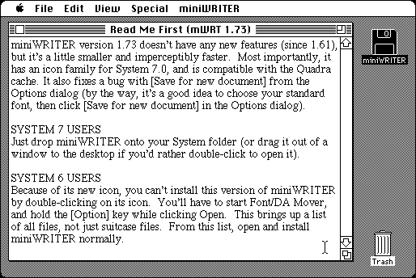

Download
miniwriter1.73.zip (74K) miniWRITER 1.73 repackaged into a zipped hfs disk image and checksum file. The disk image can be mounted with Mini vMac.
miniwriter1.73.cpt.hqx (111K) miniWRITER 1.73 in the original format.
copyright: David Dunham
mod date: Apr 8, 1992
license: shareware
official url :
Maitreya Design Home Page
A "text processor desk accessory", with "a word count feature" and "smart quotes".

If you find these downloads useful, please consider helping the Gryphel Project, which hosts them.
Here are the md5 checksums for the downloads, signed with Gryphel Key 5:
--------- GRY SIGNED TEXT --------- 53ea2b56f986bb0bb6ea5817a033954a miniwriter1.73.zip f31dd43c0065a2715beca18e21de9f7e miniwriter1.73.cpt.hqx ------- BEGIN GRY SIGNATURE ------- Gry/4Xa8CFcUzxdN/Oo2vY8rReBIru6LFL8gwHjx5nCP5Wc8VfEzR7jZA9h9f8cp +Wfb/QHWahHhr0nFnsM9V6PdNhdaxRPFS+FeSUJ1Zl1AN2I0QdSgZLR3VsF2vplg Mm7KDNA3xOb6yz+P/M9fV0Mv45odcf7ZNKmM0dFmkajRMohtU3L3tPUvwdXTIeUW -------- END GRY SIGNATURE --------